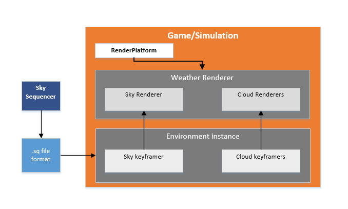

trueSKY SDK¶
For information on using the Sky Sequencer to create cloud sequencers for use with your SDK intergration click here
The SDK comes as a set of libraries, under a main “Simul” directory. These can be linked statically or dynamically, depending on the platform. Binaries reside in the directory “Simul/build/lib” in the case of static libraries, and in “Simul/build/bin” for dll’s. Source is found in the subdirectories for the constituent libraries.
There are seperate dll’s and libraries for Release and Debugging builds, found within the corresponding folders inside lib and bin
The compiled Windows libraries are in two runtime versions, MD and MT. The runtime is the set of libraries provided by Microsoft that provides basic system functions. You should generally use the same runtime all the way through a project, although different runtimes can be used for DLL’s, because they are self-contained
For Windows, the Debug and Release configurations are supplied as DLL’s linked against the dynamic, MD runtime. The Static Debug and Static Release configuratons are supplied as static libraries linked against the static, MT runtime.
TrueSkyPluginRender Library¶
Using the Samples¶
To build the samples, first use CMake to configure and generate the project files, then open the ‘Simul.sln’ located in the root of the CMake ouput directory.
Integrating the SDK¶
The two main elements to implementing trueSKY in a project are: an Environment object, which will encapsulate sky and cloud data; a WeatherRenderer, and a RenderPlatform.
You should create an instance of Environment, which is persistent.
#include "Simul/LicenseKey.h"
#include "Simul/Base/EnvironmentVariables.h"
simul::clouds::Environment* environment = NULL;
Apply your trueSKY licence key (see Licensing for more details), and initialize the Environment instance:
simul::base::SetLicence(SIMUL_LICENSE_KEY);
environment=new simul::clouds::Environment();
The Environment is API-neutral, it calculates and updates environment data. We will create a persistent RenderPlatform, whose class depends on the graphics API we use:
simul::dx11::RenderPlatform renderPlatformDx11 = new dx11::RenderPlatform();
The RenderPlatform classes implement platform-specific rendering functions called from a cross-platform interface.
In your initialization code, setup paths if needed, before creating the weather renderer: .. code-block:
renderPlatform->PushShaderPath("my_shader_path");
renderPlatform->PushTexturePath("my_texture_path");
renderPlatform->PushShaderBinaryPath("my_binary_path");
For example, the default sample uses the paths to shaders in “Platform/Crossplatform/SFX” and textures in “Media/Textures”.
And we will create a weather renderer, which is also API-neutral:
simul::clouds::BaseWeatherRenderer *weatherRenderer=new simul::clouds::BaseWeatherRenderer(environment, NULL);
In the case of DirectX 11, we initialize the RenderPlatform with a pointer to our ID3D11Device:
void OnD3D11CreateDevice(struct ID3D11Device* pd3dDevice)
{
renderPlatformDx11.RestoreDeviceObjects(pd3dDevice);
Having done this, we can now pass the render platform pointer to the device-specific initialization of our renderers:
weatherRenderer->RestoreDeviceObjects(renderPlatformDx11);
}
In-game, we update the environment, usually once per frame:
environment->update();
The time step is given in days - a floating point value, usually some small fraction less than one. This is the simulation time step, rather than real-time. Then to render:
void Render(ID3D11DeviceContext* pContext)
{
simul::crossplatform::DeviceContext deviceContext;
deviceContext.platform_context =pContext;
deviceContext.renderPlatform =&renderPlatformDx11;
deviceContext.viewStruct.view_id =view_id;
deviceContext.viewStruct.depthTextureStyle =crossplatform::PROJECTION;
deviceContext.viewStruct.view =viewMatrix;
deviceContext.viewStruct.proj =projectionMatrix;
We’ve created a devicecontext object that we will pass to the render functions. This object encapsulates the platform-specific context - in this case it’s an ID3D11DeviceContext pointer - and view-specific information: the view and projection matrices for example.
There are different types of projection matrix, and some are better than others. The classic projection transforms a viewspace position into a clip position and depth value, where depth=0 is the near plane and depth=1 is the far. But this forward projection has a very inefficient distribution of depth values with respect to distance, and causes a loss of precision. Superior to this is the reverse projection, where depth=0 represents the far plane, and depth=1 the near. It’s strongly recommended that you use reverse projection to get the best visual results from trueSKY. The projection matrix that you send to trueSKY should be the same one that was used to create your depth buffer.
Each individual view that you want to draw simultaneously on screen should have its own unique view_id. You don’t have to explicitly create views, but you should call:
weatherRenderer->RemoveView(view_id);
to free up GPU memory if a view is removed.
We specify the depth texture style so that trueSKY knows how to interpret the depth information you pass to it. The matrices simul::math::matrix4x4 are row-major view and projection matrices stored as a simple block of 16 floats - you can cast from most standard matrix classes directly.
Once per frame, before rendering , we must call PreRenderUpdate, located in weatherrenderer renderer, passing a deviceContext that refers to mainview.
weatherRenderer->PreRenderUpdate(deviceContext,real_time_s);
The parameter real_time_s is real time in seconds - as distinct from simulation time, which might be greatly accelerated, or change instantly, real time is used mainly for effects like rain that we might not want to appear accelerated.
In order to advance the time of day within a scene, the time of the internal SkyKeyframer needs to be set.
weatherRenderer->GetSkyKeyframer()->SetTime(real_time);
For each view, we render the sky, passing an appropriate device context.
weatherRenderer->Render(crossplatform::GraphicsDeviceContext &deviceContext
,const crossplatform::ViewStruct &viewStruct
,TrueSkyRenderMode renderMode
,float exposure
,float gamma
,crossplatform::Texture *mainDepthTexture
,crossplatform::Texture *cubemapTexture
,const crossplatform::Viewport *depthViewport
,const crossplatform::Viewport *viewports=nullptr
,vec3 cubemap_ground_colour=vec3(0,0,0)
,int amortization=0);
The viewstruct can be taken directly from the deviceContext for simplicity.
The exposure is a brightness multiplier - 1.0 is a good value, but the chosen number depends on how bright you want the sky to be relative to your scene. We can also perform gamma correction.
The cubemapTexture is used by the precipitation as a way of simulating refraction in individual rain droplets, as well as helping to generate abient lighting for a scene.
We pass a depth texture, because the atmospherics and clouds need to use this. The depthViewport specifies what area of the texture is being used for the current view (some engines store a larger texture and use a portion of it): pass NULL here to use the entire texture. See also Mixed Resolution Rendering.
Platform considerations¶
DirectX 11¶
To add True Sky to a DirectX 11 project, you need to link with the Simul core libraries.
In the project properties, select Configuration:All, then under “Configuration Properties, C++, General” add the following to “Additional Include Directories”:
$(SIMUL)\Platform\DirectX11
$(SIMUL)\External\DirectX\Effects11_Win8SDK\inc
$(SIMUL)\External\DirectX\DirectXTex\DirectXTex
The SIMUL environment variable is set by the trueSKY installer.
Under “Configuration Properties, Linker, General” set “Additional Library Directories” to:
$(SIMUL)\build\lib\$(Configuration)
DirectX 12¶
To add True Sky to a DirectX 12 project, you need to link with the Simul core libraries.
In the project properties, select Configuration:All, then under “Configuration Properties, C++, General” add the following to “Additional Include Directories”:
$(SIMUL)\Platform\DirectX12
$(SIMUL)\Platform\Windows
The SIMUL environment variable is set by the trueSKY installer.
Under “Configuration Properties, Linker, General” set “Additional Library Directories” to:
$(SIMUL)\build\lib\$(Configuration)
OpenGL¶
In order to build the OpenGL sample you will need GLUT, and GLEW (both included in Simul/External). GLSL is used for shaders.
To add True Sky to an OpenGL project:
In the project properties, select Configuration:All, then under “Configuration Properties, C++, General” add the following “Additional Include Directories”:
$(SIMUL)\External\stb
$(SIMUL)\Platform\External\glfw\include
$(SIMUL)\Platform\OpenGL
Under “Configuration Properties, Linker, General” set “Additional Library Directories” to:
"$(SIMUL)/lib/$(PlatformName)/VC11/$(ConfigurationName)";"$(SIMUL)/External/OpenGL/lib";"$(SIMUL)/External/FreeImage/Dist"
The libraries themselves are linked automatically when the headers are included.
Vulkan¶
In order to build the Vulkan sample, you will also require GLUT and GLEW, which are both included in Simul/External.
To add True Sky to a Vulkan project:
In the project properties, select Configuration:All, then under “Configuration Properties, C++, General” add the following “Additional Include Directories”:
$(SIMUL)\Platform\Windows
$(SIMUL)\External\stb
$(SIMUL)\Platform\External\glfw\include
$(SIMUL)\Platform\Vulkan
Under “Configuration Properties, Linker, General” set “Additional Library Directories” to:
$(SIMUL)/Platform/External/glfw/build_mt/lib;$(SIMUL)/Platform/External/glfw/build_mt/lib/$(Configuration);